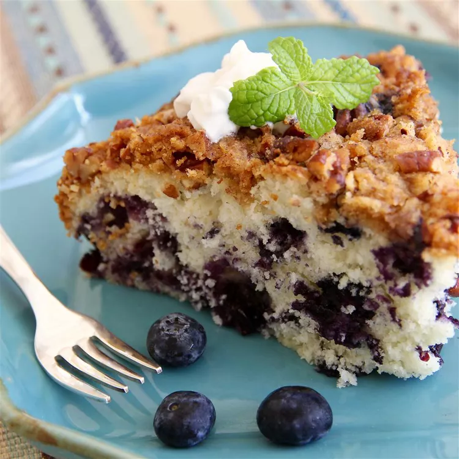

Blueberry Coffee Cake

Ingredients
- 1/4cp butter
- 3/4cp white sugar
- 1 egg
- 1/2cp milk
- 2cp all-purpose flour - for cake
- 2tsp baking powder
- 1/2tsp salt
- 2cp blueberries
- 1/2cp brown sugar
- 3tbsp all-purpose flour - for streusel
- 1tsp ground cinnamon
- 1/2cp chopped pecans
- 3tbsp butter>
Steps
- Preheat Oven to 375 degrees F or 190 degrees C
- Grease and flour a 9in springform pan
- Sift together the flour, baking powder, and salt
- In a large bowl, cream together the butter and sugar until light and fluffy.
- Beat in the egg
- Beat in the flour mixture alternately with the milk, mix just until incorporated
- Stir in the blueberries
- Pour batter into prepared pan
- In a small bowl, combine brown sugar, 3tbsp flour, cinnamon, and chopped pecans
- Cut in butter until crumbly
- Sprinkle over the batter
- Bake in the preheated oven for 40-45min or until a toothpick inserted into the middle of the cake comes out clean
- Allow to cool